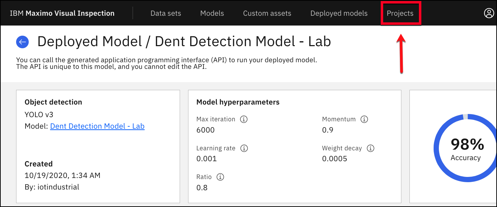
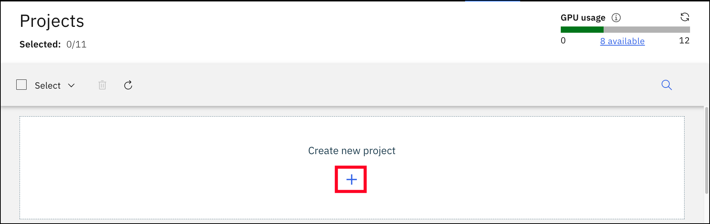
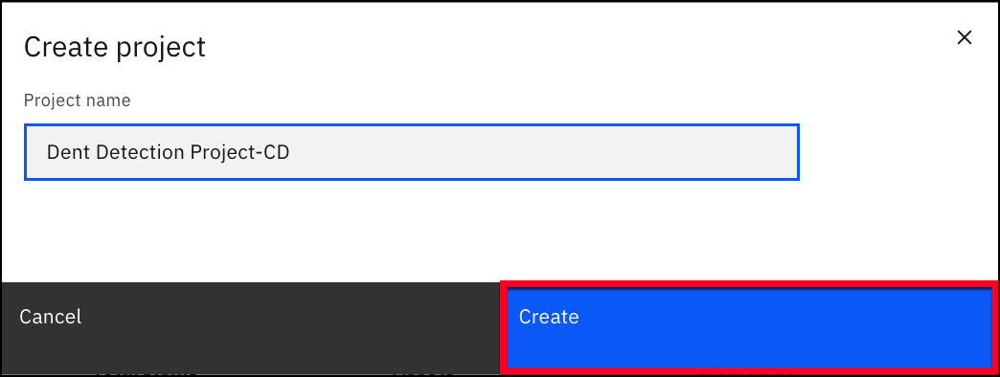
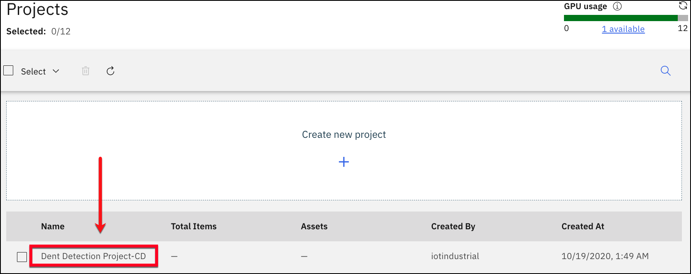
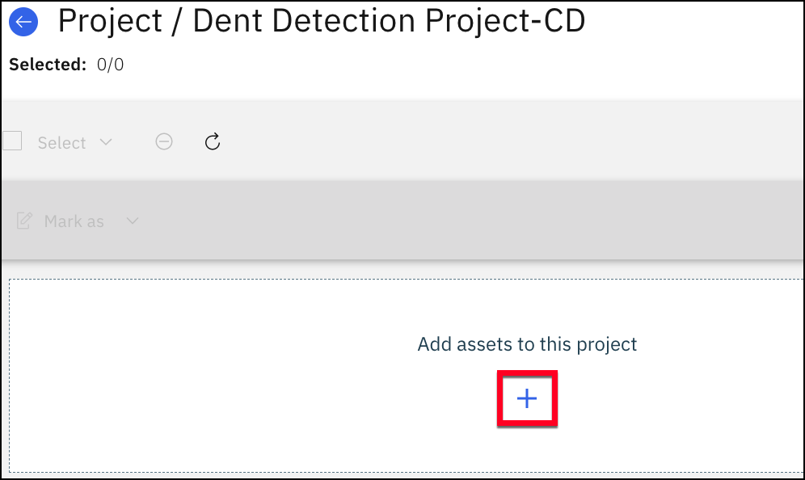
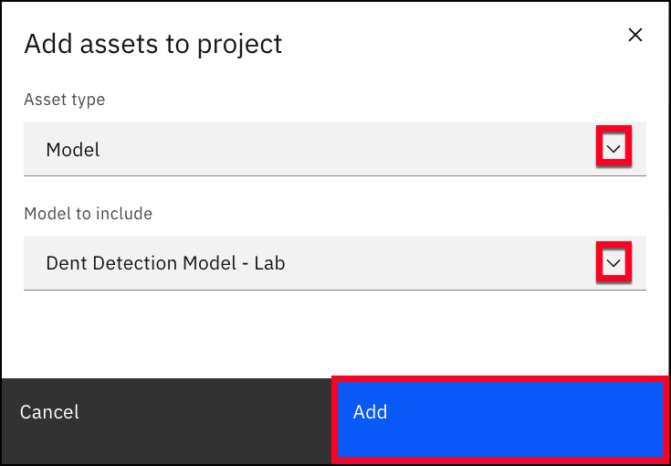
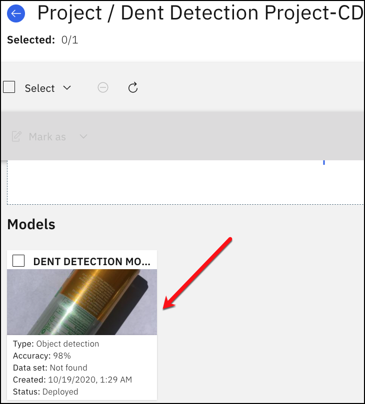

Exercise 1.3 - Project Creation for Inspections
We will now create a project that will be used on Maximo Visual Inspection Mobile. Projects allow you to group trained models with the data sets that were used for training. In Exercise 2, we will show you how a project is used with Maximo Visual Inspection Mobile.
-
Click on
Projectsin the top menu.
-
Click on the blue
+symbol under create new project.
-
Enter
Dent Detection Project-YourInitialsor whatever name you choose for the projects name and then click the Create button.
-
Click on the project you just created.

-
Click on the blue
+symbol underAdd assets to this project.
-
Select
Modelfor theAsset typeand chooseDent Detection Model - Labthat we uploaded from the .zip file. Now, click theAddbutton. (Do not use the Detection Model that we trained with 2000 iterations and 15 images in a previous step.)
-
You can now see the added model to your project.

Congratulations, you have completed Exercise 1!
You have created a Deep Learning model that will be able to detect aluminum cans for dents in the manufacturing line. Now, we can use our model for inspections in the next exercise.